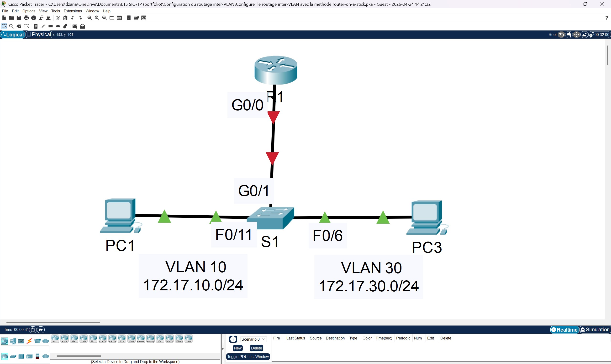
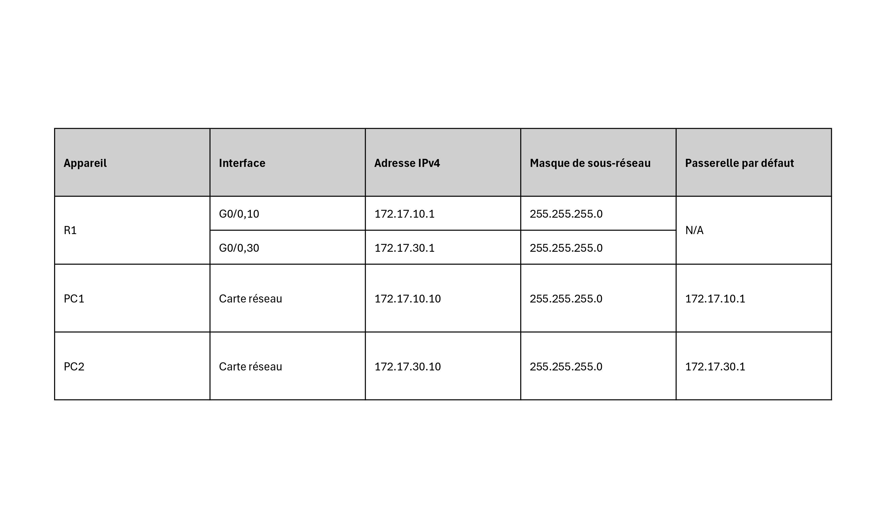
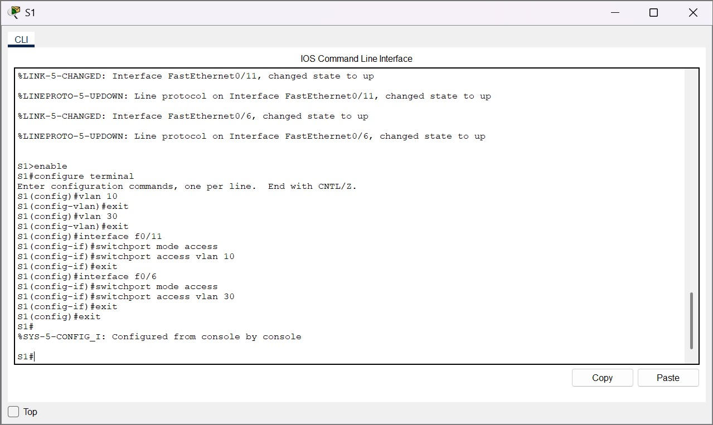
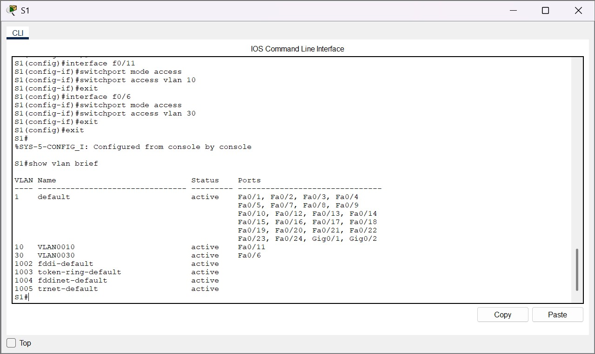
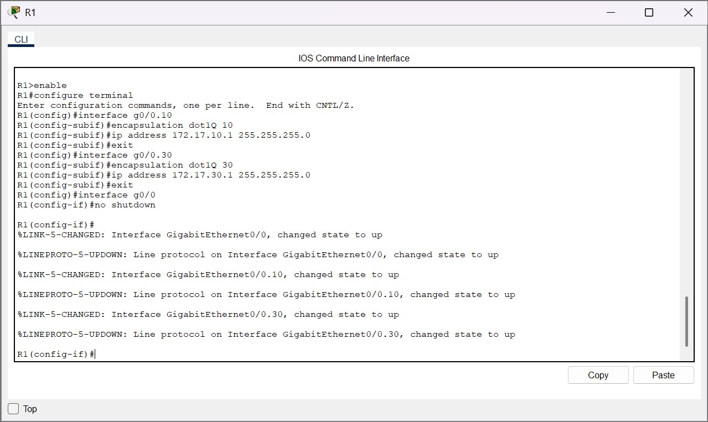
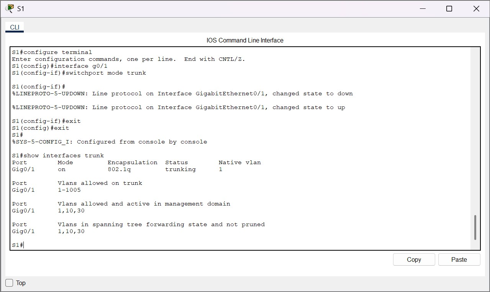
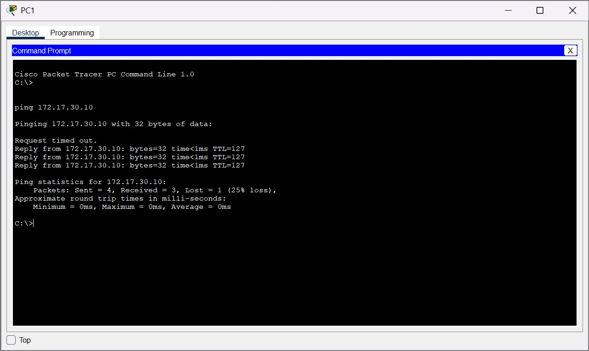
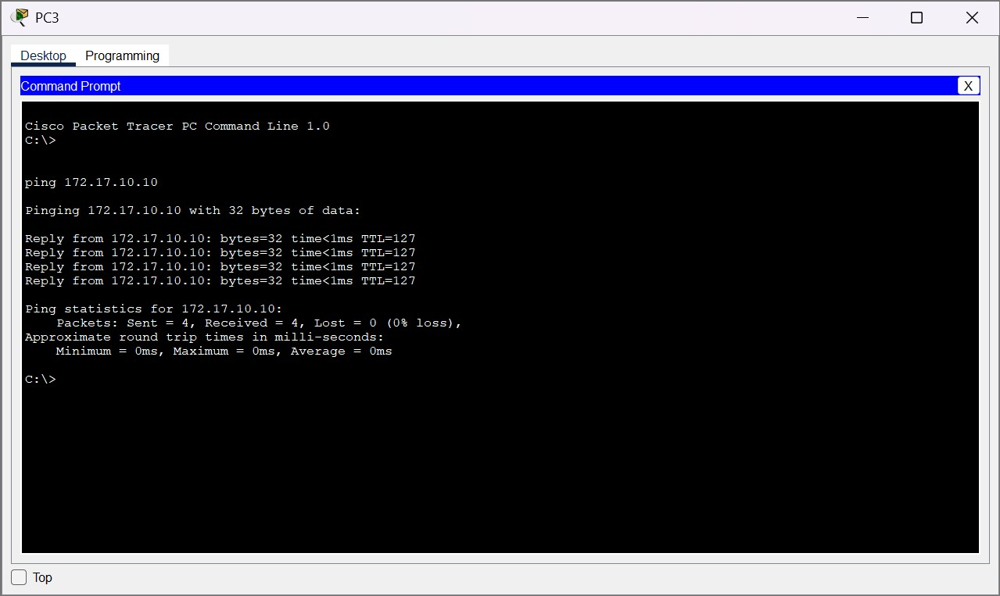

Dans le cadre de ma formation, j’ai réalisé le TP 4.2.7 sur Cisco Packet Tracer portant sur la configuration du routage inter-VLAN avec la méthode router-on-a-stick.
L’objectif était de permettre la communication entre deux VLAN à partir d’un seul lien physique entre un commutateur et un routeur, en utilisant des sous-interfaces et l’encapsulation 802.1Q.
Objectifs
Créer les VLAN 10 et 30.
Attribuer les ports aux VLAN correspondants.
Configurer le lien trunk entre le commutateur et le routeur.
Configurer les sous-interfaces du routeur.
Activer l’encapsulation 802.1Q.
Vérifier la connectivité inter-VLAN.
Environnement technique
Logiciel : Cisco Packet Tracer
Équipements : routeur Cisco, commutateur Cisco et postes clients
Interface : CLI Cisco IOS
Technologies : VLAN, trunk 802.1Q et sous-interfaces
Topologie réseau et table d'adressage
La topologie est composée d’un routeur R1, d’un commutateur S1 et de deux postes clients placés dans des VLAN distincts.
La table d’adressage permet d’identifier les adresses IP utilisées par les postes clients et les sous-interfaces du routeur.


Étape 1 – Création des VLAN sur le commutateur
Je suis d’abord entré dans le commutateur S1 en ouvrant son interface CLI afin d’accéder à l’environnement de commandes Cisco IOS.
J’ai créé les VLAN 10 et 30 afin de séparer logiquement les postes clients dans deux réseaux distincts.
J’ai ensuite vérifié la configuration avec la commande show vlan brief afin de contrôler que les VLAN étaient bien présents sur le commutateur.


Étape 2 – Configuration des sous-interfaces du routeur
Je suis ensuite entré dans le routeur R1 afin de configurer le routage inter-VLAN.
J’ai créé les sous-interfaces associées aux VLAN 10 et 30, puis j’ai appliqué l’encapsulation 802.1Q sur chacune d’elles.
J’ai attribué une adresse IP à chaque sous-interface afin qu’elle serve de passerelle par défaut pour les postes du VLAN correspondant.

Étape 3 – Activation du trunking
J’ai configuré le lien entre S1 et R1 en mode trunk afin de transporter le trafic des VLAN 10 et 30 sur une seule liaison physique.
Cette configuration est indispensable dans la méthode router-on-a-stick, car le routeur utilise une interface physique et plusieurs sous-interfaces logiques.
J’ai vérifié que le trunking était actif et qu’il permettait le passage des VLAN nécessaires.

Étape 4 – Tests de connectivité inter-VLAN
J’ai réalisé des tests de connectivité entre les postes situés dans des VLAN différents.
Les tests de ping entre PC1 et PC3 ont permis de confirmer que les postes pouvaient communiquer grâce au routage effectué par les sous-interfaces du routeur.
Cette vérification valide le fonctionnement du routage inter-VLAN et la cohérence de la configuration appliquée.


Résultats obtenus
VLAN 10 et VLAN 30 créés.
Table d’adressage identifiée.
Sous-interfaces du routeur configurées.
Encapsulation 802.1Q appliquée.
Trunking activé entre le commutateur et le routeur.
Connectivité inter-VLAN validée.
Compétences mobilisées
Gérer le patrimoine informatique
Identification et configuration d’équipements réseau dans une infrastructure segmentée.
Répondre aux incidents et aux demandes d’assistance et d’évolution
Mise en place d’une solution de routage inter-VLAN répondant à un besoin de communication entre réseaux.
Mettre à disposition des utilisateurs un service informatique
Configuration et vérification d’un service de communication entre VLAN.
Organiser son développement professionnel
Développement de compétences en VLAN, trunking, routage inter-VLAN et documentation de la réalisation dans le portfolio.
Bilan personnel
Ce TP m’a permis de mieux comprendre le principe du routage inter-VLAN et le rôle des VLAN dans la segmentation d’un réseau.
J’ai appris à configurer un lien trunk et des sous-interfaces avec encapsulation 802.1Q.
Cette réalisation est importante car la méthode router-on-a-stick permet de faire communiquer plusieurs VLAN tout en limitant le nombre d’interfaces physiques nécessaires sur le routeur.